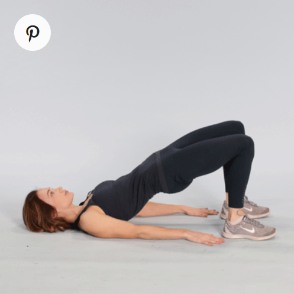
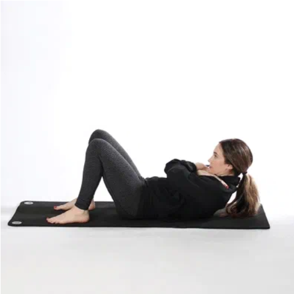
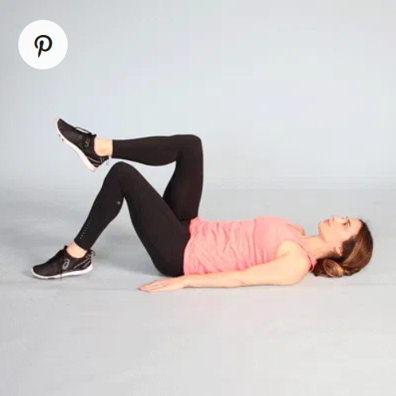
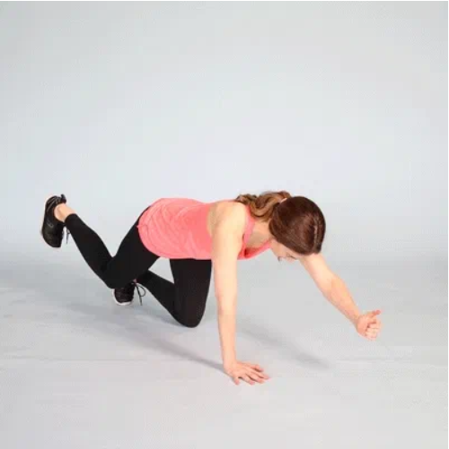
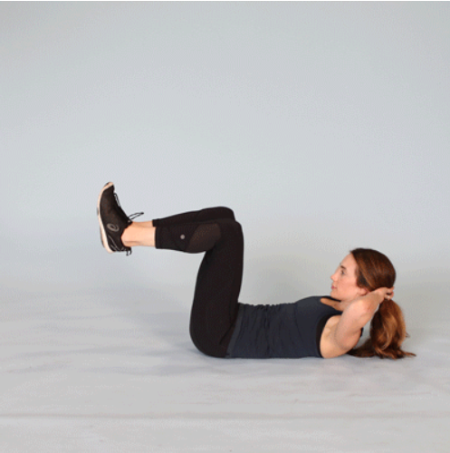
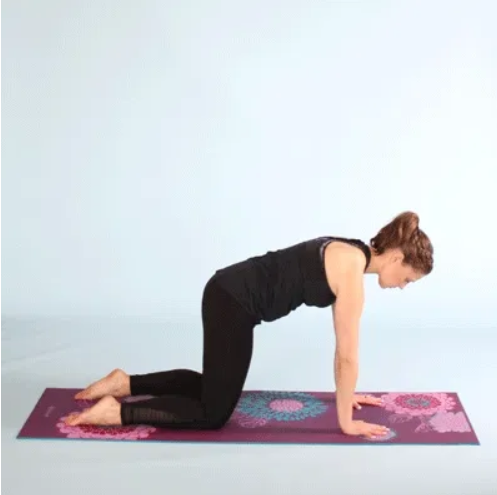
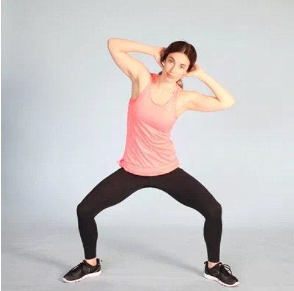
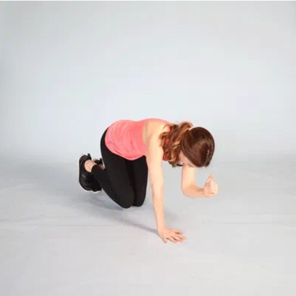
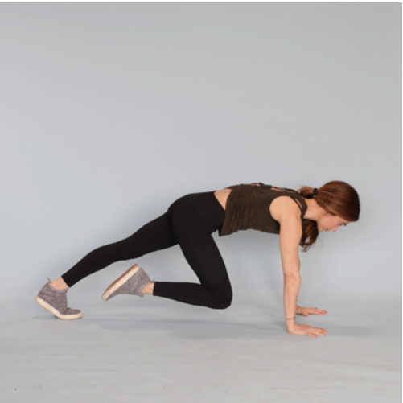
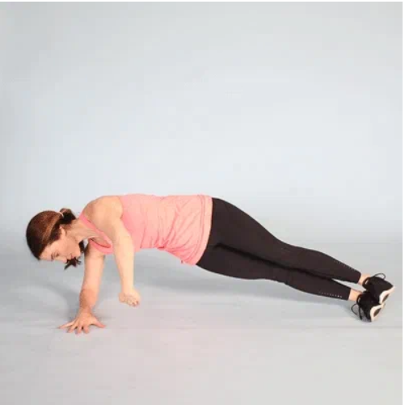

The Best Core Exercises for All Fitness Levels
Benefits of working out
Core exercises can include yoga poses, crunches, planks, and other exercises that incorporate additional muscles.
Beginner moves
If you’re new to exercise or if you haven’t exercised in a long time, start with these beginner moves.
It may also be a good idea to consult with a personal trainer, if you can, to talk about the right amount of reps and sets for your personal fitness level and goals.
Throughout these exercises, you’ll see the phrase “tighten your core” — but how do you know if you’re actually doing that?
One good way to start is to inhale, and as you’re doing that, imagine you’re bringing your belly button toward your spine. Hold your muscles tight in that position for a few seconds.
This feeling of braced stomach muscles is what it feels like to engage — or tighten — your core.
Bridge

This pose activates your glutes to lift your hips, which helps train your core while toning your butt and thighs.
1.Start on your back. Bend your knees and plant your feet on the floor at hip width. Place your hands at your sides, palms down.
2.Tighten your core and glutes.
3.Raise your hips until your knees are in line with your shoulders.
4.Hold for 10–30 seconds.
5.Repeat 3–5 times.
Crunch
Start on your back. Bend your knees and plant your feet on the floor at hip width. Line up your head and spine. Cross your arms across your chest.
Tighten your core and relax your neck and shoulders. Tuck in your chin and lift your upper back, keeping your lower back, pelvis, and feet on the floor. Pause.
Slowly lower your upper back to return to the starting position.
Start with 1 set of 8–12 reps.

1.Start in a plank position. Your core should be tight, shoulders pulled down and back, and your neck neutral.
2.Bend your elbows and begin to lower your body down to the floor. When your chest grazes it, extend your elbows and return to the start. Focus on keeping your elbows close to your body during the movement.
3.Complete 3 sets of as many reps as possible.
If you can’t quite perform a standard pushup with good form, drop down to a modified stance on your knees — you’ll still reap many of the benefits from this exercise while building strength.
Supine toe tap
This is a basic Pilates exercise. It engages your core muscles while working your glutes, hips, and legs.
Toe taps also place minimal pressure on your spine. If you have back pain, toe taps may be an ideal alternative to crunches.

1.Start on your back. Lift your legs, with your knees bent to 90 degrees. Place your hands at your sides, palms down.
2.Tighten your core. Lower your right foot and gently tap the floor, keeping your left leg still and your back flat.
3.Raise your right leg to return to the starting position.
4.Repeat with your left leg.
5.Start with 1 set of 8–12 reps.
Bird Dog
The bird dog engages both your abdominal and back muscles, so it’s an ideal core-strengthening move. It also challenges your coordination, balance, and stability.

1.Start on all fours, hands below your shoulders and knees below your hips.
2.Tighten your core. Lift and straighten your right leg to hip level. Simultaneously lift and extend your left arm to shoulder level, palm down. Hold a neutral spine without allowing your back to arch as you extend your arm and leg.
3.Pause.
4.Repeat with your left leg and right arm.
5.Start with 1 set of 8–12 reps.
Bicycle crunch

1.This variation on a regular crunch works your obliques, rectus abdominous, and hips.
2.Start with your back on the floor, with your left knee bent and drawn toward your chest. Keep your right leg straight and slightly lifted off the floor. Place your hands behind your neck or the lower part of your head — be careful not to pull on your neck while you do this move.
3.With your left knee bent and your right leg straight, lift your right shoulder off the floor and move your right elbow toward your left knee.
4.As you bring your right shoulder back to the floor, extend your left leg while bending your right knee and bringing it toward your chest.
5.As your right knee moves farther in, lift your left shoulder off the floor and move your left elbow toward your right knee.
6.Start with 3 sets of 12 alternate repetitions.
Plank
The plank is a full-body exercise that targets your core. It also strengthens your arms, shoulders, back, glutes, and legs.

1.Start on all fours, with your hands below your shoulders and your knees below your hips.
2.Straighten your legs behind you, keeping your feet hip-width apart. Tighten your core.
3.Hold for 10–30 seconds.
4.Repeat 3–5 times.
5.To make this exercise easier, keep your knees on the floor, with your weight over your hands. Keep a straight line from your knees to shoulders.
Warrior crunch
This crunch variation works your core and lower body, including your thighs, glutes, and quads.

1.Stand with your feet slightly wider than shoulder width and your toes turned outward. Put your hands behind your head and open your chest.
2.Tighten your core and glutes. Bend your knees until your thighs are parallel to the floor.
3.Bend your torso to the side, moving your right elbow toward your right thigh. Repeat on the left side.
4.Start with 1 set of 8–12 reps.
Bird dog with elbow to knee
This variation on the basic bird dog incorporates fluid movement to engage your abs and back while improving core mobility.

1.Start on all fours, hands below your shoulders and knees below your hips.
2.Tighten your core. Lift and straighten your right leg to hip level. Simultaneously lift and extend your left arm to shoulder level, palm down.
3.Bring your right knee and left elbow toward each other. Return to the starting position.
4.Start with 1 set of 8–12 reps.
5.Repeat on the other side
Mountain climber
This intermediate exercise combines a plank with knee movements, so it’s an excellent move for balance and core strength.

1.Start in a plank with your hands below your shoulders. Tighten your core.
2.Lift your right knee toward your chest, keeping your back straight and hips down.
3.Return your right leg to the starting position as you simultaneously lift your left knee toward your chest.
4.Continue alternating legs. Start with 1 set of 8–12 reps.
5.Complete 2-3 sets of 30-second holds to start.
Side plank with rotation
This exercise is an advanced version of the basic plank. It strengthens your arms, shoulders, and obliques by combining a side plank with arm movements.

1.Lie on your right side with your right forearm below your shoulder. Extend your legs, left foot on top of the right. Tighten your core.
2.Lift your hips to form a straight line with your body. Raise your left arm straight up.
3.Rotate your torso toward the floor and bring your left arm under your body.
4.Rotate your torso again to straighten your left arm to return to the starting position.
5.Start with 1 set of 8–12 reps.
6.Repeat on the other side.